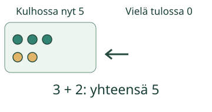
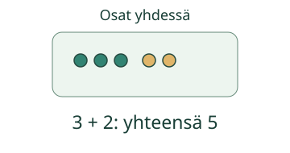

Kaksi määrää yhteen

Aavan kulhossa on 3 marjaa. Tulossa on 2 lisää. Kokeile, miten määrä muuttuu.
Miksi tähän tulee plus?
Plusmerkki + yhdistää kaksi määrää. Kun marjoja tulee lisää, yhdistät alkuperäisen määrän ja tulleen määrän.

Osat voivat olla jo valmiina
Toisessa kasassa on 3 merkkiä ja toisessa 2. Valitse mallista Kaksi osaa yhteen ja yhdistä ne. Mitään ei tule ulkopuolelta.

Pelkkä 5 kertoo yhteismäärän. 3 + 2 näyttää lisäksi, mitkä kaksi määrää yhdistetään.
Entä jos toinen osa on tyhjä?
Rasiassa on 3 nappia. Toisessa ei ole yhtään, eli siinä on 0. 3 + 0 yhdistää nämä määrät. Yhteensä on edelleen 3. Plus ei siis aina suurenna määrää.
Lopuksi: Milloin voit käyttää plussaa, vaikka yhtään uutta esinettä ei tule paikalle?
Opettajalle ja ilman ruutua
Luokat 1–2. Tavoite: ymmärtää plusmerkki lisäämisen ja kahden joukon yhdistämisen merkkinä. Pakollinen esitieto on M-NUM-03. Pienet laskut ja merkin käyttö avataan kuvista tässä; M-ADD-01 tai M-ARITH-01 eivät ole lisäportteja. Aikuinen voi lukea ohjeet.
Anna kaksi pientä nappijoukkoa. Näytä ensin, miten toiseen tulee lisää. Yhdistä sitten kaksi jo olemassa olevaa joukkoa. Pyydä lasta näyttämään osat ja merkitsemään ne plussalla. Hyväksy osien kumpikin järjestys.
Malli ja vihje paljastavat rakennetta. Harjoituksen tarkistus koskee kahden annetun määrän kuvaamista pluslaskulla; se ei osoita itsenäistä laskusujuvuutta, muistamista tai formaalia hallintaa. Ei henkilöhistoriaa. Pelilinkit ja niiden varmistus kuuluvat verkon erilliseen kuoreen.